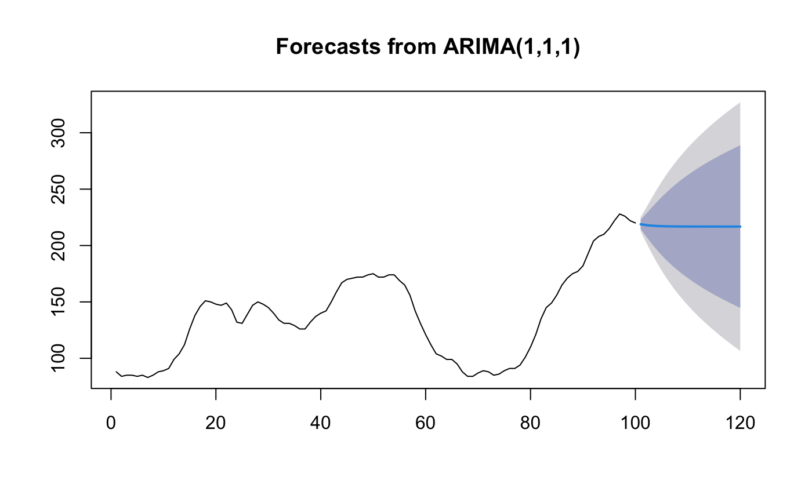

Returns best ARIMA model according to either AIC, AICc or BIC value. The function conducts a search over possible model within the order constraints provided.
auto.arima( y, d = NA, D = NA, max.p = 5, max.q = 5, max.P = 2, max.Q = 2, max.order = 5, max.d = 2, max.D = 1, start.p = 2, start.q = 2, start.P = 1, start.Q = 1, stationary = FALSE, seasonal = TRUE, ic = c("aicc", "aic", "bic"), stepwise = TRUE, nmodels = 94, trace = FALSE, approximation = (length(x) > 150 | frequency(x) > 12), method = NULL, truncate = NULL, xreg = NULL, test = c("kpss", "adf", "pp"), test.args = list(), seasonal.test = c("seas", "ocsb", "hegy", "ch"), seasonal.test.args = list(), allowdrift = TRUE, allowmean = TRUE, lambda = NULL, biasadj = FALSE, parallel = FALSE, num.cores = 2, x = y, ... )
| y | a univariate time series |
|---|---|
| d | Order of first-differencing. If missing, will choose a value based
on |
| D | Order of seasonal-differencing. If missing, will choose a value
based on |
| max.p | Maximum value of p |
| max.q | Maximum value of q |
| max.P | Maximum value of P |
| max.Q | Maximum value of Q |
| max.order | Maximum value of p+q+P+Q if model selection is not stepwise. |
| max.d | Maximum number of non-seasonal differences |
| max.D | Maximum number of seasonal differences |
| start.p | Starting value of p in stepwise procedure. |
| start.q | Starting value of q in stepwise procedure. |
| start.P | Starting value of P in stepwise procedure. |
| start.Q | Starting value of Q in stepwise procedure. |
| stationary | If |
| seasonal | If |
| ic | Information criterion to be used in model selection. |
| stepwise | If |
| nmodels | Maximum number of models considered in the stepwise search. |
| trace | If |
| approximation | If |
| method | fitting method: maximum likelihood or minimize conditional sum-of-squares. The default (unless there are missing values) is to use conditional-sum-of-squares to find starting values, then maximum likelihood. Can be abbreviated. |
| truncate | An integer value indicating how many observations to use in
model selection. The last |
| xreg | Optionally, a numerical vector or matrix of external regressors, which
must have the same number of rows as |
| test | Type of unit root test to use. See |
| test.args | Additional arguments to be passed to the unit root test. |
| seasonal.test | This determines which method is used to select the number of seasonal differences. The default method is to use a measure of seasonal strength computed from an STL decomposition. Other possibilities involve seasonal unit root tests. |
| seasonal.test.args | Additional arguments to be passed to the seasonal
unit root test.
See |
| allowdrift | If |
| allowmean | If |
| lambda | Box-Cox transformation parameter. If |
| biasadj | Use adjusted back-transformed mean for Box-Cox transformations. If transformed data is used to produce forecasts and fitted values, a regular back transformation will result in median forecasts. If biasadj is TRUE, an adjustment will be made to produce mean forecasts and fitted values. |
| parallel | If |
| num.cores | Allows the user to specify the amount of parallel processes
to be used if |
| x | Deprecated. Included for backwards compatibility. |
| ... | Additional arguments to be passed to |
Same as for Arima
The default arguments are designed for rapid estimation of models for many time series.
If you are analysing just one time series, and can afford to take some more time, it
is recommended that you set stepwise=FALSE and approximation=FALSE.
Non-stepwise selection can be slow, especially for seasonal data. The stepwise algorithm outlined in Hyndman & Khandakar (2008) is used except that the default method for selecting seasonal differences is now based on an estimate of seasonal strength (Wang, Smith & Hyndman, 2006) rather than the Canova-Hansen test. There are also some other minor variations to the algorithm described in Hyndman and Khandakar (2008).
Hyndman, RJ and Khandakar, Y (2008) "Automatic time series forecasting: The forecast package for R", Journal of Statistical Software, 26(3).
Wang, X, Smith, KA, Hyndman, RJ (2006) "Characteristic-based clustering for time series data", Data Mining and Knowledge Discovery, 13(3), 335-364.
